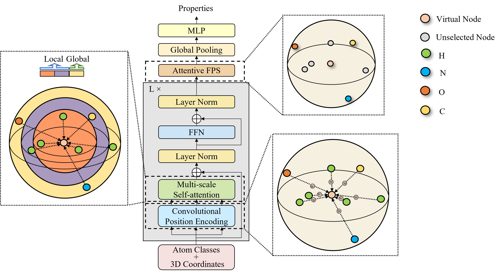

Hi, I'm Fang WU!
 Welcome to my personal web page. I obtained a Master's degree from Columbia University. Currently, I am working with Professor Qiang Zhang and Professor Huajun Chen at Zhejiang Unversity to conduct research in interdisciplinary fields of machine learning and biochemistry. Before that, I have acted as a research assistant in Vision and Learning Representation Group at Huazhong University of Science and Technology supervised by Professor Xiang Bai and in Deep Learning Lab at Westlake University supervised by Professor Zhenzhong Lan. My interests lie in 3D geometric deep learning and molecular representation learning.
Welcome to my personal web page. I obtained a Master's degree from Columbia University. Currently, I am working with Professor Qiang Zhang and Professor Huajun Chen at Zhejiang Unversity to conduct research in interdisciplinary fields of machine learning and biochemistry. Before that, I have acted as a research assistant in Vision and Learning Representation Group at Huazhong University of Science and Technology supervised by Professor Xiang Bai and in Deep Learning Lab at Westlake University supervised by Professor Zhenzhong Lan. My interests lie in 3D geometric deep learning and molecular representation learning.
Email: fw2359@columbia.edu
Address: Westlake District, Hangzhou, China
News and Highlights
 One paper submitted to ICLR 2022 [Link].
One paper submitted to ICLR 2022 [Link].
Publications

3D-Transformer: Molecular Representation with Transformer in 3D Space.
Fang Wu, Qiang Zhang, Dragomir Radev, Jiyu Cui, Wen Zhang, Huabin Xing, Ningyu Zhang, Huajun Chen
Arxiv 2021 [Paper]
[Code]
 InsertGNN: Can Graph Neural Networks Outperform Humans in TOEFL Sentence Insertion Problem?
InsertGNN: Can Graph Neural Networks Outperform Humans in TOEFL Sentence Insertion Problem?
Fang Wu, Xiang Bai
Arxiv 2021 [Paper]
[Code]